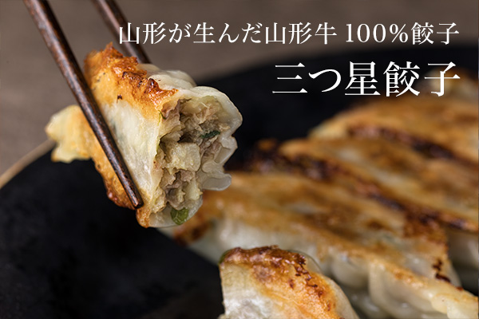
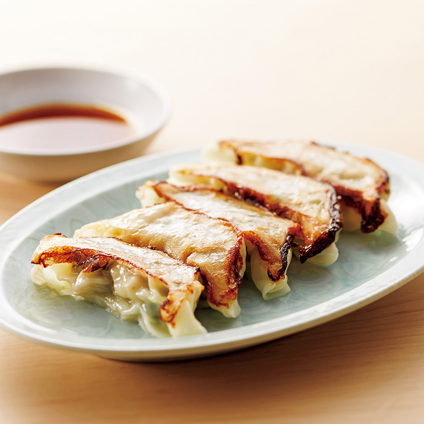
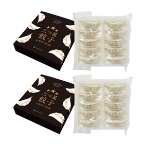

リンベルが日本一と認めた「極みの味」
山形が生んだ山形牛100％餃子


ここが「極み」
- 100％山形牛
- 国産野菜だけを使用
- パリパリ感ともっちり感のある薄めの皮
スタッフ＆お客様の声
お客様の声
- 餃子の中から溢れ出る山形牛の肉汁が甘い！
お肉に負けないシャキシャキした野菜の存在感。牛肉を使った餃子をはじめて食べましたが、豚肉の餃子より肉汁が濃厚でおいしいかも。 - 30代 女性
- 牛肉って餃子に合うんですね。食べやすいサイズで、焼き色のついたパリパリの所がおいしい。
皮も薄くて食べやすいのでパクパクが止まらない。 - 40代 女性
- 皮が美味しい。具材の味を感じる前に、皮の味だけで感動させられる。
ニラと牛肉の相性も良くサイコーです。 - 30代 男性
- 餃子なのに餃子じゃないような深い味わい。
牛肉のおいしさが際立つ餃子です。 - 40代 男性
料理研究家やグルメライターも絶賛！
「美食のスペシャリスト」の方々からも
お褒めの言葉をいただいています！
商品のこだわりポイント
100％山形牛と国産野菜を使った安心・安全な絶品餃子

100％山形牛と、安心・安全にこだわり国産野菜を厳選して使用した贅沢な餃子です。
良質な赤身肉（モモ肉・ウデ肉）と、焦がした牛脂をあわせることで、肉汁あふれるジューシーな味わいに仕上げました。
加熱すると透明感を増す薄めの皮は、焼面はパリッとしながら、もっちり感も残した、ふたつの違う食感が楽しめます。
また、野菜にも良質な国産野菜だけを厳選使用。粗目のみじん切りにして加えたキャベツの歯ざわり、ニンニク、ニラ、ショウガなどの香りが、牛の旨みをまろやかに引き出す、他にはない絶品餃子です。
餃子好きの方は、ぜひ一度お試しください。
ご注文はこちら
-

薄皮の中にうま味のしっかりとした山形牛と
良質な国産野菜がぎっしり
フードクリエイター 金魚（青山清美）さん
詳しくはこちら